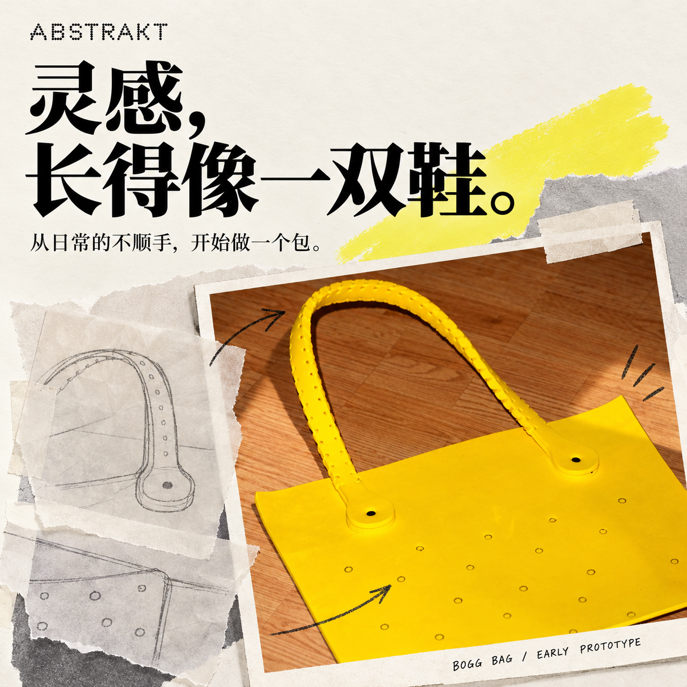
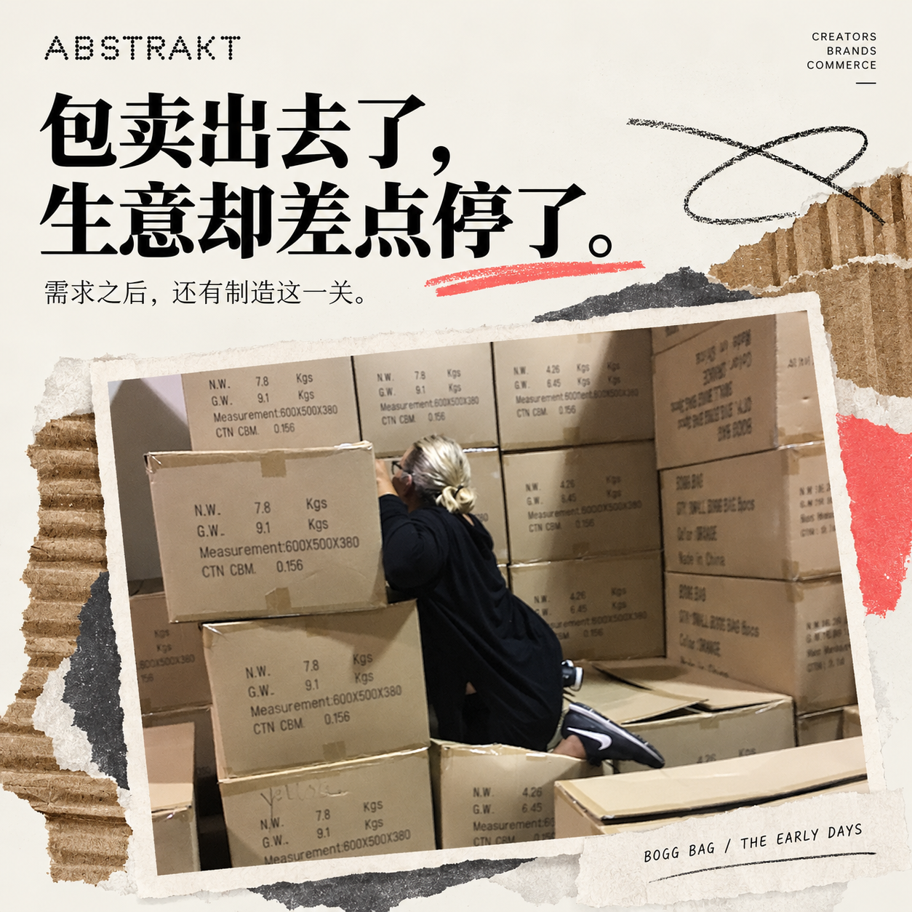

带孩子去一趟海边，包里要装多少东西？毛巾、防晒霜、水、零食，还有随时可能弄湿的小物件。
东西还没拿齐，包先倒了。沙子钻进去，湿毛巾塞进去，回家又是一场清理。
美国妈妈 Kim Vaccarella 对这套流程太熟悉了。她在新泽西海岸度假，总找不到一个真正顺手的沙滩包。草编的、帆布的、网眼的，换过一轮，问题仍然在。[1]
多年以后，她创办的 BOGG BAG 出现在美国大零售商的货架上。《Entrepreneur》2026 年 7 月的采访报道，其年收入已超过 1 亿美元。[2]
起点很小：她想要一个放下去不会倒、弄脏了能直接冲洗的包。
01 灵感，长得像一双鞋
2008 年，这个念头冒出来时，Kim 还在商业房地产金融行业工作。她没有做过消费品牌，也不懂手袋制造。[1][2]
她注意到孩子穿的泡沫鞋：轻、耐水、好清洁。如果用类似的材料做包呢？
后来成为 BOGG BAG 标志的厚实包身和孔洞，就沿着这个方向出现了。材料选用 EVA 泡沫，包能立住，也方便冲洗。[1]
她最初想把创意申请专利，卖给有经验的公司。接连碰壁之后，只能自己往下试。[2]
对一个没有行业背景的人来说，第一步并不是什么宏大愿景。她很清楚，自己究竟被哪几个小问题折腾过。

早期样品档案拼贴。素材：BOGG BAG 官网；AI 辅助设计。
02 包卖出去了，生意却差点停了
早期产品在当地精品店试卖，反应不错。Kim 开始追加订单，后来甚至动用了给孩子准备的大学储蓄，订下更大一批货。[3]
结果，等来的包出现了黑色条纹，达不到正常销售的质量要求。[3]
需求似乎已经被证明，制造却出了问题。钱压在货里，货又卖不出去。对仍要上班、照顾家庭的她来说，这次打击让项目一度搁置。
做出一个有人想买的东西，和稳定地把它交到顾客手里，是两道关。
这门生意没有沿着第一轮试卖的好消息一路向前。它先让一个家庭承担了实实在在的损失。

创业库存档案拼贴。素材：BOGG BAG 官网；AI 辅助设计。
03 让她重启的，是用过包的人
2012 年，飓风桑迪袭击美国东海岸。Kim 把包捐给受灾家庭，用来装生活必需品。[3]
大约一年后，有收过包的人又来联系她：这些包很好用，哪里还能买到？[3]
一批没能按计划卖出去的产品，在真实生活里留下了使用价值。
这些反馈给了她重新开始的理由。后来，她获得同事约 12 万美元的投资，重新寻找制造伙伴，让生产和供货慢慢回到正轨。[1]
这次重启带回来的，还有一个更清楚的判断：人们愿意为这个包留下来，首先是因为它能解决问题。
04 一个海滩问题，走进了更多日常
Kim 很长时间里同时做着两份工作。直到 2018 年，她才离开干了 26 年的房地产金融行业，全职经营品牌。[2]
顾客也在替产品拓宽用途。海滩之外，它被带去泳池、船上和市场；一个能站稳、容易清洁、装得下东西的包，找到了更多出门的理由。[4]
2024 年，品牌进一步走向大型零售渠道，与 Target 合作，为不同零售伙伴开发合适的颜色和产品组合。[5]
到了 2026 年的采访里，那个曾因质量问题停摆的小项目，已经是一门年收入超过 1 亿美元的生意。[2]
回头看，最值得记住的也许是她的观察方法：从自己反复遇到的麻烦出发，做出一个具体的改善，再听真正用过的人怎么说。
一个妈妈想把去海边这件事变轻松。许多人，恰好也在等这样一个包。
资料来源
文中收入规模依据 2026 年 7 月采访报道，指品牌年度营业收入，并非 2026 全年审计结果。本文为公开资料整理；配图为基于品牌官网素材的 AI 辅助视觉设计，静物与拼贴画面不作为现场摄影记录。
[2] Entrepreneur · 创始人专访，2026-07-01
[3] Entrepreneur · Kim 创业问答，2024-04-02